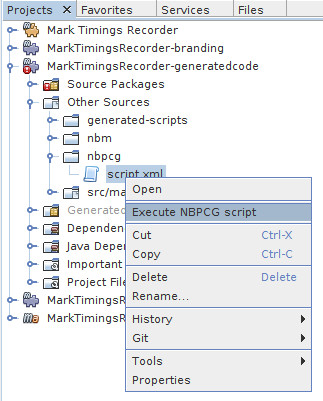
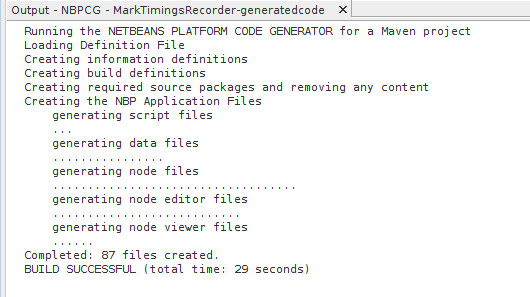

21 May 2022
A normal NetBeans module project should be created (both Maven and ANT build system projects are supported). This project is then customised so that the code generator can be add code to the project.
nbpcg under Other Sources.script.xml) in the nbpcg nodenbpcg-files under the project root.script.xml) in the NBPCG File node.The NBPCG script can be executed by actions on the popup menu on:
1) The Project node
2) The NBPCG script file

Executing the script will open a new tab in the output window. Progress and errors will be reported in that tab.

NBPCG does not currently setup dependencies for the generated modules (either on NBPCG support libraries or Netbean Platform modules). The following documentation details the dependencies that exist and should be added to the various generated modules.
| : Datamodel : NodeModel : NodeViewer : NodeEditor | ||||
|---|---|---|---|---|
| NetBeans Platform | ||||
| Explorer & Property Sheet API | x | x | ||
| Lookup API | x | x | x | |
| Nodes API | x | x | x | |
| UI Utilities API | : | x | x | |
| Utilities API | x | x | x | |
| Window System API | : | x | x | |
| NBPCG-Library | ||||
| MySQL | *: | : | ||
| NBPCG Data Support Lib | x | x | x | x |
| NBPCG Form Support Lib | : | x | ||
| NBPCG Node Support Lib | x | x | x | |
| NBPCG Support Lib | x | x | x | x |
| NBPCG TopComponent Support Lib | : | x | x | |
| GENERATED MODULES | ||||
| XX DataModel | x | x | x | |
| XX NodeModel | : | x | x | |
| XX NodeEditor | x | : | ||
| If you are using table aliases to access other tables then you will need to add addition dependencies to those modules | ||||
| ALIAS MODULES | ||||
| XX DataModel | x | x | x | x |